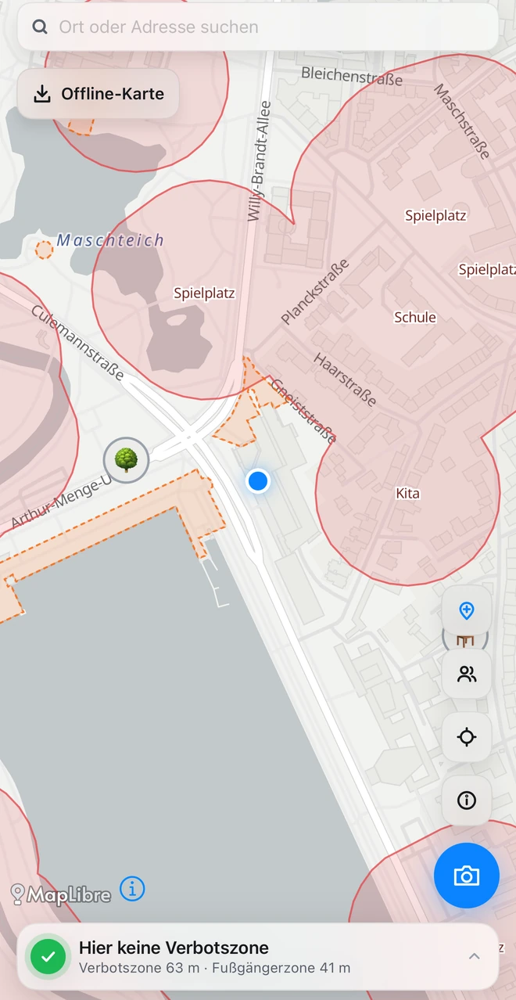
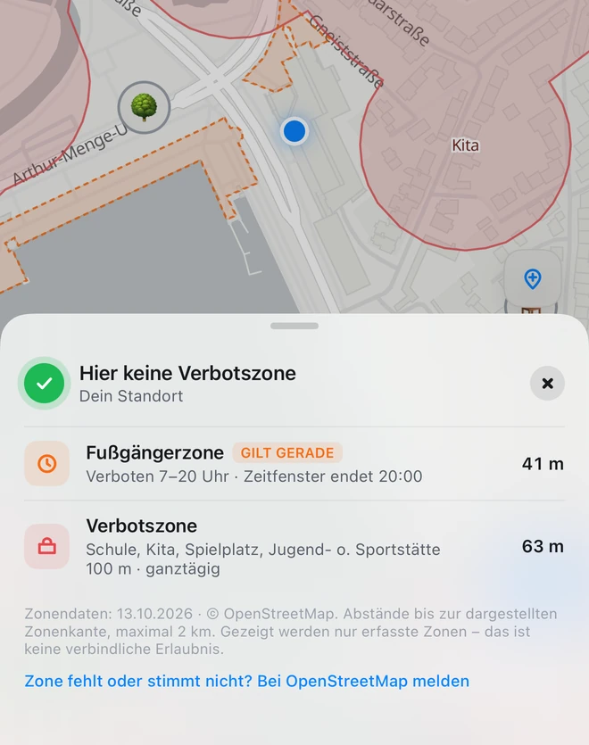
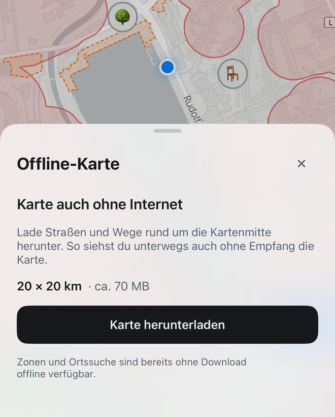

Cannabis-Karte für Deutschland
Cannabis-Karte.
Verbote im Blick.
Rote Bereiche um Schulen, Kitas und Spielplätze sehen. Prüfe die erfassten Zonen in deiner Nähe oder an deinem nächsten Ziel.
Für iPhone · iOS 17+ · Ab 18
Keine Werbung. Kein eigenes App-Konto.

Abstände und Zeitfenster
Wie weit weg?
Bis wann?
Sieh den Abstand bis zur dargestellten Zonenkante. Für erfasste Fußgängerzonen zeigt GreenZones das Zeitfenster 7–20 Uhr.
Die 100-Meter-Flächen sind vereinfacht. Sichtweite, Eingänge und die Situation vor Ort bleiben maßgeblich.


Einmal laden, unterwegs nutzen
Deine Karte.
Ohne Internet.
Zonen und Ortssuche liegen auf deinem iPhone. Lade zusätzlich die Karte für 20 × 20 Kilometer herunter – dann siehst du dort auch Straßen und Wege ohne Internet.
In der App: Offline-Karte → Karte herunterladen.
Unterwegs nachsehen
Suche einen Park, Platz oder Bahnhof. Sieh dir erfasste Zonen und Abstände rund um dein Ziel an.
Eigene Spots merken
Speichere Orte, die du wiederfinden möchtest. Ein Name, ein Zeichen, dein Punkt auf der Karte.
Ausgewählt teilen
Du wählst die Freunde für einen Spot. Geteilt wird der feste Ort, nicht dein laufender Standort. Dafür braucht ihr iCloud.
So liest du die Cannabis-Karte
- Rote Flächen: vereinfachte 100-Meter-Flächen um erfasste Schulen, Kitas, Spielplätze, Jugendtreffs und Sportstätten.
- Orange Flächen: erfasste Fußgängerzonen – dort gilt das zeitbezogene Konsumverbot von 7 bis 20 Uhr. Andere Verbote können auch danach gelten.
- Ohne markierte Zone: Die App zeigt „Hier keine Verbotszone“: In den hinterlegten Daten ist dort keine Zone erfasst. Das ist keine verbindliche Erlaubnis.
Orientierung, keine verbindliche Freigabe
GreenZones ist eine Orientierungshilfe ohne Gewähr auf Richtigkeit oder Vollständigkeit. Die Flächen werden aus OpenStreetMap-Daten berechnet, und OpenStreetMap kennt nicht jede Einrichtung. Maßgeblich ist das Gesetz; die Verantwortung bleibt bei dir. Die Karte erfasst insbesondere nicht, ob Minderjährige unmittelbar anwesend sind. Auch Anbauvereinigungen, militärische Bereiche und örtliches Hausrecht können zusätzliche Grenzen setzen. Die 100-Meter-Flächen der App sind eine vereinfachte Darstellung; das Gesetz bezieht sich auf Sichtweite und Eingangsbereiche. §5 KCanG im Gesetz nachlesen.
Häufige Fragen
Ist GreenZones kostenlos?
Ja. GreenZones ist kostenlos im App Store erhältlich und enthält keine Werbung. Die Karte funktioniert ohne eigenes App-Konto. Für gemeinsame Spots und Einladungen brauchst du ein auf dem Gerät angemeldetes iCloud-Konto.
Gilt die Karte auch außerhalb Deutschlands?
GreenZones ist auf das deutsche Konsumcannabisgesetz ausgerichtet. Die Anzeige ist keine Auskunft zur Rechtslage in anderen Ländern.
Warum fehlen gemeinsame Spots oder Freunde?
Die gemeinsamen Funktionen brauchen ein angemeldetes iCloud-Konto und eine Internetverbindung zum Abgleichen. Prüfe unter Einstellungen → [dein Name] → iCloud die Anmeldung. Eigene lokale Spots kannst du auch unabhängig davon auf dem Gerät behalten.
Ein Freund sieht meinen Spot nicht.
Ein Spot wird nur geteilt, wenn die Person angehakt ist: Spot öffnen → Spot verwalten → Wer sieht diesen Spot. Wer neu dazukommt, braucht außerdem einmal einen Einladungslink über Freunde → Freund hinzufügen.
Ich habe keine Mitteilung über eine Einladung bekommen.
Mitteilungen müssen einmal erlaubt worden sein (die App fragt danach, sobald der erste Freund dazukommt). Prüfen lässt sich das unter Einstellungen → GreenZones → Mitteilungen. Ohne angemeldetes iCloud-Konto werden keine Mitteilungen zugestellt.
Funktioniert die Karte ohne Empfang?
Die Zonen, die Statusanzeige und die Ortssuche laufen immer ohne Netz — sie liegen auf dem Gerät. Lade zusätzlich Straßen und Wege herunter: Auf der Karte Offline-Karte → Karte herunterladen wählen. Gespeichert werden 20 × 20 Kilometer rund um die sichtbare Kartenmitte. Die Größe hängt vom Gebiet ab; du kannst den Download pausieren und fortsetzen.
Wie werde ich ein Bild wieder los?
Bild antippen, dann in der Kopfzeile den Papierkorb (eigene Bilder werden bei allen gelöscht) oder das durchgestrichene Auge (fremde Bilder werden dauerhaft ausgeblendet, auf Wunsch zusammen mit der Person).
Wie lösche ich alle meine Daten?
Die App löschen. Damit sind alle lokalen Daten weg. Was du in iCloud geteilt hast, lässt sich zusätzlich in den iCloud-Einstellungen des Geräts verwalten. Einzelne Dinge gehen auch in der App: Spot entfernen, Freundschaft beenden, Suchverlauf löschen unter Karte & Daten verwalten.
Eine Zone stimmt nicht.
Die Flächen stammen aus OpenStreetMap und werden mit App-Updates erneuert. Den Quellenstand findest du in der App unter „Über GreenZones“. Fehlt dort eine Einrichtung oder ist sie falsch eingetragen, fehlt sie auch hier. Schreib mir gern — und wer mag, kann den Eintrag direkt bei OpenStreetMap korrigieren, davon haben alle etwas.
Kontakt und Anbieter
Ihmepassage 6
30449 Hannover
Deutschland
leonwork07@gmail.com
Angaben nach §5 DDG. Verantwortlich für den Inhalt dieser Seite ist derselbe. Es besteht keine Bereitschaft und keine Verpflichtung zur Teilnahme an Streitbeilegungsverfahren vor einer Verbraucherschlichtungsstelle.